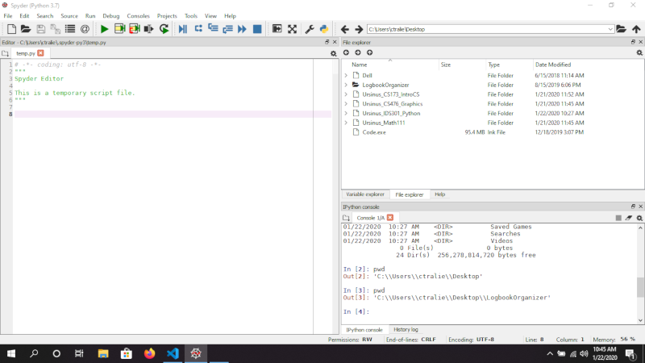
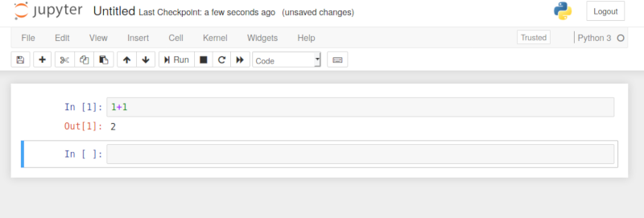

Software Environment
We will be using a distribution of python known as Anaconda Python, which comes shipped with the majority of the tools that we need for the course. Click here to download Anaconda. Scroll to the bottom of the page and choose the 64-bit version of Python 3.11 for your operating system (Windows/Mac/Linux), download it, and follow the default options during installation, including registering this as the default Python for your system.
Once you install Anaconda, you should be able to launch Spyder and Jupyter, which are the two environments we will be using to write and run code. Under Windows, you can launch these programs by searching for them in the search bar. Under Mac/Linux, you can run them by typing spyder and jupyter, respectively, in the command prompt.
Below is a picture of what Spyder looks like
Below is a picture of what jupyter looks like
Personally, I prefer Jupyter, and this is what we'll be using in class. But for those who are more used to things like Netbeans, you may prefer Spyder, and this has been a popular option in the past.
My Preferred Solution: External .py Files Autoreloaded in Jupyter
My personal preferred way to code in python is to have most of my code that's going to be reused in a separate .py file that I import into a jupyter notebook, and I use the jupyter notebook like an extended "main" where I simply run experiments and plot results. You can make a .py file from within the jupyter interface as follows (or you can use any other text editor such as Visual Studio Code or Atom, as long as you save it in the same directory as your notebook):
Then, you can create a notebook and import all of the code from your file by typing
Where I'm assuming I'm in the same directory as a file called mycode.py (or whatever else you want to call it). The autoreload extension makes it so that you don't have to restart your notebook every time you make changes to your .py file, unless you add methods, in which case you'll still need to restart the notebook
Click here to view more tips on keeping your notebooks clean
Google Colab
For students who prefer to work on the cloud during class, there is an option similar to repl.it known as Google Colab that you can use.
PyCharm
For an option even more like Netbeans, there is PyCharm community version. The first thing you will have to do is install a couple of packages that we'll be using in the class. Create a script and run the following two lines
Then, to make sure everything is working, run the following code:
You should see an image that looks like this:

NOTE: Later in the course when we get to trees, I will want everyone to use Jupyter notebook or Google colab to help organize a bunch of plots better, but Pycharm should get you through most of the course